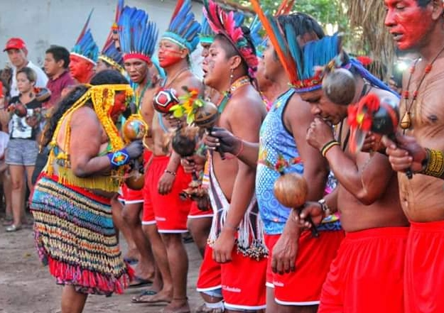
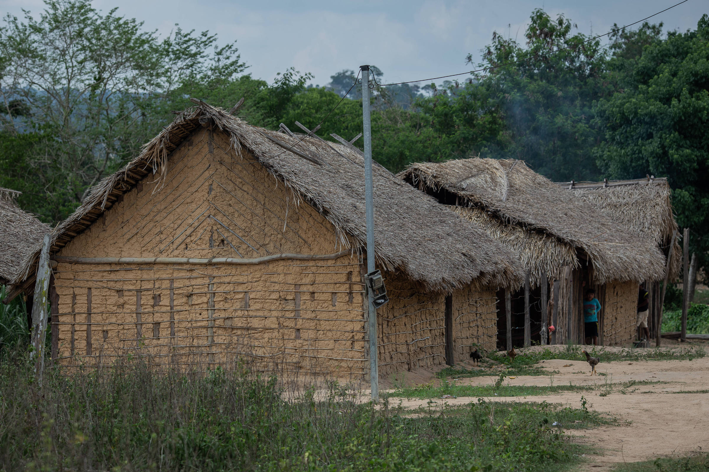

Os Guajajara
As terras dos guajajara ficam localizadas no centro do estado do Maranhão. Além do nome Guajajara, que tem o significado de "donos do cocar", eles também são conhecidos por Tenetehára, que significa "somos os seres humanos verdadeiros".
Disponíel em: https://www.gov.br/funai/pt-br/assuntos/noticias/2019/mulheres-guajajara-realizam-festa-da-menina-moca-no-maranhao
Figura que mostra o povo Guajajara na realizando a festa da menina moca no Maranhão.
Língua
A língua guajajara faz parte da família tupi-guarani. Eles chamam sua língua de ze'egete ("a fala boa"). Em suas aldeias o português é língua secundária.
Suas Terras
Todas as suas terras estão localizadas no Maranhão. Próximo dos rios Pindaré, Grajaú, Mearim e Zutiua. Essas regiões possuem florestas da Amazônia e Cerradão.
Habitantes Guajajara
Não existe um número exato de habitantes guajajara no brasil, nem mesmo uma taxa certa de natalidade ou mortalidade deles. No entanto, segundo dados da Funai, existiam 13.100 em suas terras em 2000, sem contar os que moravam nas cidades.
Contanto com os Brancos
Infelizmente, a história de contanto deste povo com os brancos colonizadores é como de qualquer outro grupo étnico indígena. Pois, desde o primeiro contanto que provavelmente aconteceu por volta de 1615 até meados da DÉCADA DE 80, houve conflitos e exploração por parte dos brancos com os guajajara.
Organização Social e Política
Suas aldeias não possuem nenhuma forma típica de construção e é divida em casas redondas ou quadrangulares. As casas seguem um estilo camponês e são habitadas por famílias nucleares. Além disso, não existe clã nem nada do tipo e a maior unidade é a família extensa.

Disponíel em: https://www1.folha.uol.com.br/cotidiano/2023/01/indigenas-guajajara-de-12-e-15-anos-sao-baleados-e-internados-em-estado-grave-no-maranhao.shtml
Figura que mostra o casas e uma aldeia do povo Guajajara.
A residência temporária pós-nupcial é com o pai da mulher, pois o genro deve prestar serviços por um ou dois anos ao sogro. Ás vezes os genros até fixam-se definitivamente com os sogros, dessa forma fortalecendo a família extensa.
A chefia geralmente é masculina e recebe o nome de cacique. Essa liderança é definida pela capacidade individual, além de laço de sangue e afinidade com o o líder anterior. No entanto, esses critérios já não são mais destaques, mas sim a capacidade de se relacionar politicamente com os brancos e conseguir benéficios as aldeias.
Atividade Econômicas e Educação
A principal atividade econômica dos guajajara é a lavoura. Geralmente, nas aldeias possuem pequenas áreas destinadas a isso, mas em outras existem grandes roças. Outra prática de comércio comum é a pesca.
Além de comercializarem os produtos agrícolas com os brancos, vendem artesanatos e realizam trabalhos temporários.
Nas relações de gênero, as atividades masculinas são mais voltadas para a caça e a educação é mais liberal. Já as atividades feminas se relacionam com a agricultura e as atividades domésticas.